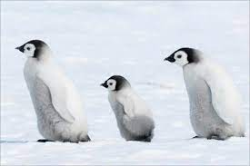

 Klik hier Pinguïns of vetganzen zijn een orde van niet-vliegende zeevogels die alleen voorkomen op het zuidelijk halfrond. De pinguïns behoren tot de orde Sphenisciformes, klasse Aves (vogels). Alle moderne pinguïns behoren tot de familie van de Spheniscidae, maar er zijn uitgestorven soorten die buiten deze kroongroep vallen. De pinguïns zijn gemakkelijk te onderscheiden van andere vogels en ze zijn volledig aangepast aan extreme koude en het leven in de zee. Ze hebben bijvoorbeeld een warm verenkleed. Pinguïns gebruiken hun vleugels om door het water te vliegen net zoals andere vogels door de lucht vliegen. Ze kunnen met een snelheid tot 30 km per uur door het water vliegen. De naam "pinguïn", die waarschijnlijk komt van het Keltische pen gwyn (witte kop), werd oorspronkelijk gebruikt voor de reuzenalk, de inmiddels uitgestorven tegenhanger (geen nauwe verwant) van de pinguïn op het noordelijk halfrond
Etiam rhoncus. Maecenas tempus, tellus eget condimentum rhoncus, sem quam semper libero, sit amet adipiscing sem neque sed ipsum. Nam quam nunc, blandit vel, luctus pulvinar, hendrerit id, lorem. Maecenas nec odio et ante tincidunt tempus. Donec vitae sapien ut libero venenatis faucibus. Nullam quis ante. Etiam sit amet orci eget eros faucibus tincidunt. Duis leo. Sed fringilla mauris sit amet nibh. Donec sodales sagittis magna. Sed consequat, leo eget bibendum sodales, augue velit cursus nunc, quis gravida magna mi a libero. Fusce vulputate eleifend sapien. Vestibulum purus quam, scelerisque ut, mollis sed, nonummy id, metus. Nullam accumsan lorem in dui. Cras ultricies mi eu turpis hendrerit fringilla. Vestibulum ante ipsum primis in faucibus orci luctus et ultrices posuere cubilia Curae; In ac dui quis mi consectetuer lacinia.
Nam pretium turpis et arcu. Duis arcu tortor, suscipit eget, imperdiet nec, imperdiet iaculis, ipsum. Sed aliquam ultrices mauris. Integer ante arcu, accumsan a, consectetuer eget, posuere ut, mauris. Praesent adipiscing. Phasellus ullamcorper ipsum rutrum nunc. Nunc nonummy metus. Vestibulum volutpat pretium libero. Cras id dui. Aenean ut eros et nisl sagittis vestibulum. Nullam nulla eros, ultricies sit amet, nonummy id, imperdiet feugiat, pede. Sed lectus. Donec mollis hendrerit risus. Phasellus nec sem in justo pellentesque facilisis. Etiam imperdiet imperdiet orci. Nunc nec neque. Phasellus leo dolor, tempus non, auctor et, hendrerit quis, nisi.